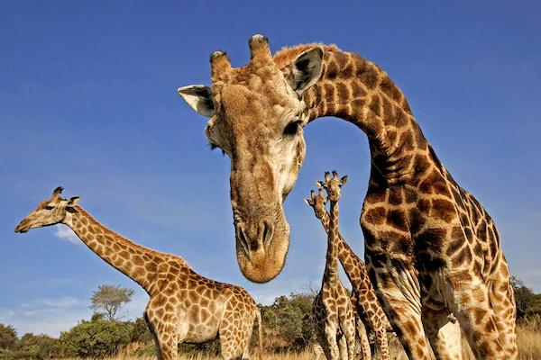

The zoo consists of diverse indigenous as well as foreign wildlife including mammals, reptiles, Amphibians, birds, butterflies and fish, destined for a horrible and torturous time spent. Every year the zoo exchanges some of its animals with other zoos worldwide to enlarge the diversity of its animals and introduce new species of animals as well. Dehiwala Zoo always trying to introduce new members to their animal collection to expand it. In 2008, 3 month old seal has been brought to Sri Lanka from the Krefeld Zoo in Germany.[9] A green anaconda (Eunectes murinus) which was brought to Sri Lanka some five years ago along with a male of the species, has given birth to 23 baby anacondas in the Dehiwala Zoo in 2008, and 20 of them had survived.[10] This was a very rare occasion of giving birth while in captivity, especially in a relatively unfamiliar territory. The ongoing animal breeding program is helpful for increasing the population of some animal species in the zoo and it also important for conservation of the endangered species in the world
Birds
Sri Lanka is incredibly rich in birds. There are 453 species of avifauna. The distribution of these birds varies with habitats and climatic changes. Nearly 225 species of residents including 33 species of endemics make huge avian diversity in this island. Large number of different varieties of birds colour the zoo. Bird section comprises of, beautiful parrot species, flightless birds, aquatic and semi aquatic birds and many other flying birds. Group of Flamingos beautifies the entrance of the zoo.
Elephants
African Elephants (Loxodonta africana) and Asian Elephants (Elephas maximus maximus) are different species that live in different parts of the world. You can see both species in the Dehiwala Zoo. There are six Asian Elephants and one African eEephant (Loxodonta africana).Any body can see the educational display of Elephants in every evening at free of charge.
Butterflies
Almost 245 species of butterflies have been recorded in Sri Lanka, of which 26 species are endemic and 100 species are threatened. The Zoo has a small but attractive butterfly garden, which is rich in shrubs and flowers. A small stream flows through the butterfly garden, makes the surrounding more pleasant and cool. Though there are so many butterflies flying throughout the zoo, Butterfly Park is the place where visitors should visit to see different varieties of butterflies in a beautifully landscaped area.
Aquarium
The aquarium, which is a star attraction of the zoo, consists freshwater, marine and brackish water sections. It was established for 40 years. Many fish species and corals, mollusks, echinoderms and arthropods are in 22 tanks.Visitors could observation most behavior patterns of these aquatic organisms such as breeding, colonization, symbiosis and competition etc., from outside the tank. There are 50 fish species identified as endemic to Sri Lanka. Out of them many different varieties are exhibited in the aquarium.
Premates
Primates (Lemurs, Monkeys and Apes) are the most active mammals in the zoo.Brown lemur (Eulemur fulvus albifrons), Ring tailed lemur (Lemur catta) and Slender Loris sub species (Loris tardigrates)are primitive Primates in the zoo. There are around 16 varieties of monkeys. Purple Faced Leaf Monkey (Trachypithecus vetulus) is endemic while Toque Monkey (Macaca sinica sinica) sub species is endemic. Swinging style and jumping from branch to branch using prehensile tails attract visitors to drawn Spider monkeys (Ateles belzebuth).Monkeys in family groups with mothers caring babies, it is worth to see attraction great apes Orang Utans and Chimpanzees.
Cats
Cat family (family Felidae) members are prominent among carnivores in the zoo. Sri Lankan Leopard (Panthera pardus kotiya), African Lion (Panthera leo) and Bengal Tiger (Panthera tigris tigris) are the big cats found in the zoo. Both orange and white Bengal Tigers could see here. The Sri Lankan leopard colloquially known as “Kotiya” and “Diviyā” in Sinhala, is a subspecies of leopard native to Sri Lanka and it is the country’s top predator. Fishing cat (Prionailurus viverrinus), Rusty spotted cat (Prionailurus rubiginosus phillipsi) and Jungle cat (Felis chaus kelaarti) are the small indigenous cats found in the country and in the zoo as well.
Reptilium
Sri Lankan reptiles count nearly 209 known species with great diversity. These reptiles consist of snakes, lizards, crocodiles, turtles and tortoises. Almost 125 species of them are endemic to Sri Lanka. Approximately 32 species of reptiles inclusive of foreign species exhibit in the Reptilium. Two types of Sri Lankan Crocodiles, Marsh Crocodile and Estuarine Crocodile with the Galapagos Giant Tortoise are at the entrance of the Reptilium to welcome the visitors. Cuban Crocodile, Indian Gavial, False Gavial and three Dwarf crocodiles, the smallest crocodile species in the world enhance the value of the Crocodile collection.
Mammals
They are mammals that have hooves in feet. Depending on the number of hooves, they are classified as even toed mammals and odd toed mammals. Visitors are quickly fascinated at the entrance of the zoo, by a group of Chapman’s Zebra. Visitors do not miss the chance of pose in to a photograph in front of the zebra enclosure where can see galloping, jumping and eating Zebra family behind. Being highly endangered and second largest animal in the land, Black Rhinoceros (Diceros bicornis) family receive the attention of almost all visitors. Rhinoceros, Domestic Ass (Mule), African Wild Ass (Donkey), Przewalsk’s Wild Horse and Pony are the odd-toed mammals could see in the zoo.

Plants
Name Of the Plant
Image of the Plant
Description
Osbeckia octandra
Osbeckia octandra, the eight stamen osbeckia, is a plant species in the genus Osbeckia of the family Melastomataceae. It is considered to be endemic to Sri Lanka, where it is known as "Heen Bovitiya - හීන් බෝවිටියා" in Sinhala language. But some texts indicate that it is also found in Tamil Nadu of India. Fruits are dry capsules with numerous seeds. Leaves and young stems are edible, whereas leaves, stem and bark also widely used as a valuable medicine in Ayurveda for treating Diabetes mellitus, Hepatitis, Jaundice, and Hyperlipidaemia. The juice extracted from Osbeckia octandra leaves is an effective treatment for liver damage caused by Paracetamol poisoning
Hydnocarpus venenata
Hydnocarpus venenatus is a species of plant in the Achariaceae family. It is endemic to Sri Lanka. It is threatened by habitat loss. This species has been included as a Mozambican species on the basis of its presence in the Preliminary Mozambican checklist. However there is no species of this name in the Sub-Saharan checklist.
Actinodaphne speciosa
This genus of dioecious evergreen trees and shrubs has 140 species, in tropical and subtropical regions of Asia, with 17 Chinese species, 13 of which are endemic. The trees are 3 to 25 m tall, with leaves usually clustered or nearly verticillate, rarely alternate or opposite, unlobed, pinninerved, and rarely triplinerved. The flowers are star-shaped, small, and greenish. The flowers are clustered or whorled and are unisexual.[1] Umbels are solitary or clustered or arranged in a panicle or raceme; involucral bracts are imbricated and caducous.
Myristica dactyloides
Jatiphala is a large evergreen tree found in the wet forests of the western ghats in south India and Sri Lanka. It is closely related to the nutmeg tree.